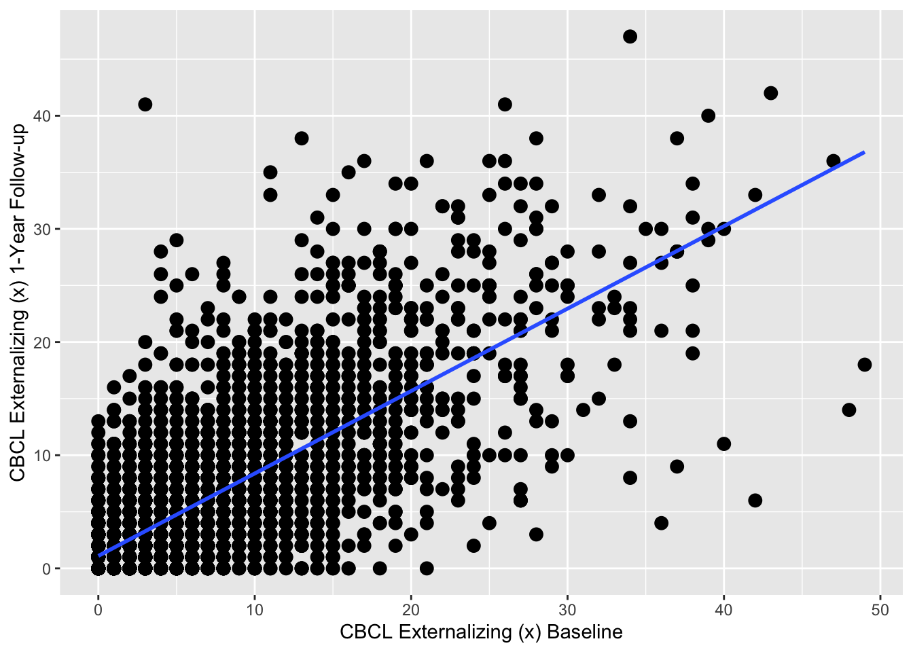
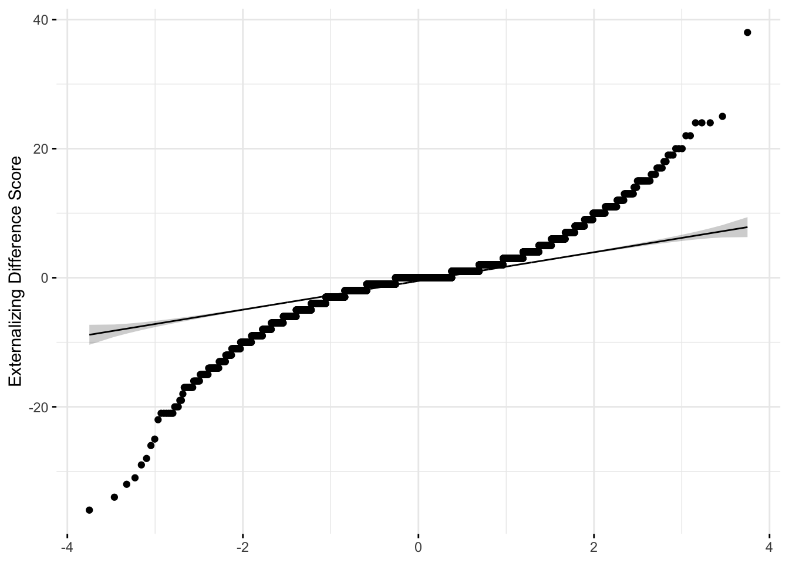

# Install necessary packages (if not already installed)
if (!("lme4" %in% installed.packages())) install.packages("lme4")
if (!("lmerTest" %in% installed.packages())) install.packages("lmerTest")
if (!("tidyverse" %in% installed.packages())) install.packages("tidyverse")
if (!("ggpubr" %in% installed.packages())) install.packages("ggpubr")ex1.onesample
#Load packages
library(lme4)
library(lmerTest)
library(tidyverse)
library(ggpubr)df_long<- read_csv("/Users/shawes/Desktop/df_long.csv")
df_wide<- read_csv("/Users/shawes/Desktop/df_wide.csv")
#str(df_long)
#hist(df_long$Weekly_Gaming_Hour)
# Compute difference score based on CBCL Externalizing subscale scores at baseline (t1) and 1-Year Follow-up (t2)
df_wide$diffscore = df_wide$Externalizing_T1 - df_wide$Externalizing_T0
#Compute statistical summaries for the difference score variable
summary(df_wide$diffscore) Min. 1st Qu. Median Mean 3rd Qu. Max. NA's
-36.0000 -2.0000 0.0000 -0.2574 1.0000 38.0000 12 #Scatterplot to visualize relationship between t1 & t2 data used to create difference score
scatterplot <- ggplot (df_wide, aes(x = Externalizing_T0, y = Externalizing_T1)) + geom_point(size = 3) + geom_smooth(method = lm, se = F) +
xlab("CBCL Externalizing (x) Baseline") +
ylab("CBCL Externalizing (x) 1-Year Follow-up")
suppressWarnings(print(scatterplot))
#One-sample t-test to determine whether the average difference score is significantly different than 0.
result <- t.test(df_wide$diffscore, mu = 0, alternative = "two.sided")
# Print the results
result
One Sample t-test
data: df_wide$diffscore
t = -4.3794, df = 5636, p-value = 1.212e-05
alternative hypothesis: true mean is not equal to 0
95 percent confidence interval:
-0.3726310 -0.1421819
sample estimates:
mean of x
-0.2574064 #boxplot
library(ggpubr)
diffscore_boxplot <- ggboxplot(df_wide$diffscore,
ylab = "Externalizing Difference Score", xlab = FALSE,
ggtheme = theme_minimal())
suppressWarnings(print(diffscore_boxplot))
#Shapiro-Wilk test and normality (Q-Q) plot (visualization of correlation between a given sample and the normal distribution)
shapiro.test(df_wide$diffscore[0:5000])
Shapiro-Wilk normality test
data: df_wide$diffscore[0:5000]
W = 0.88497, p-value < 2.2e-16library("ggpubr")
qqplot <- ggqqplot(df_wide$diffscore,
ylab = "Externalizing Difference Score", xlab = FALSE,
ggtheme = theme_minimal())
suppressWarnings(print(qqplot))